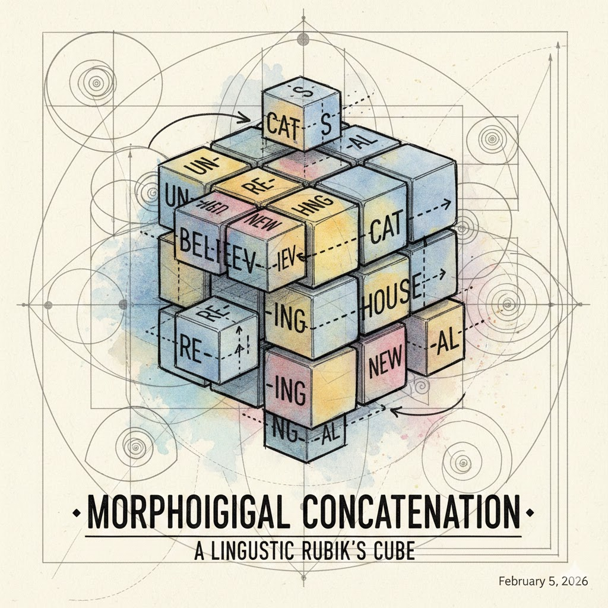
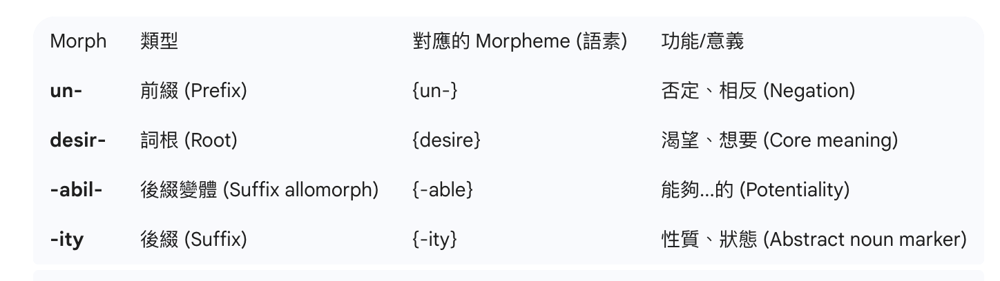
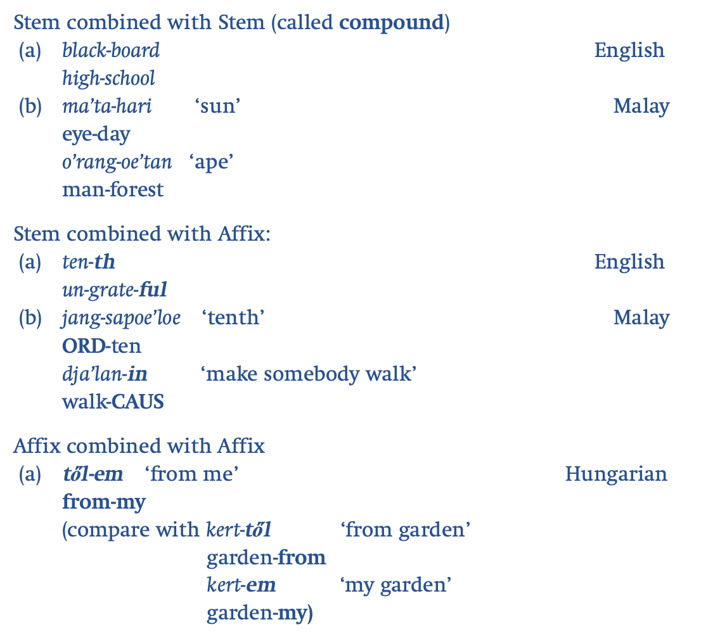
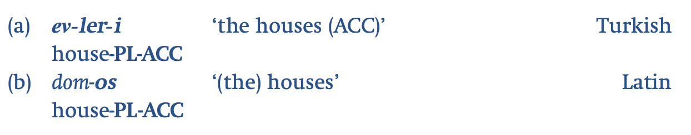
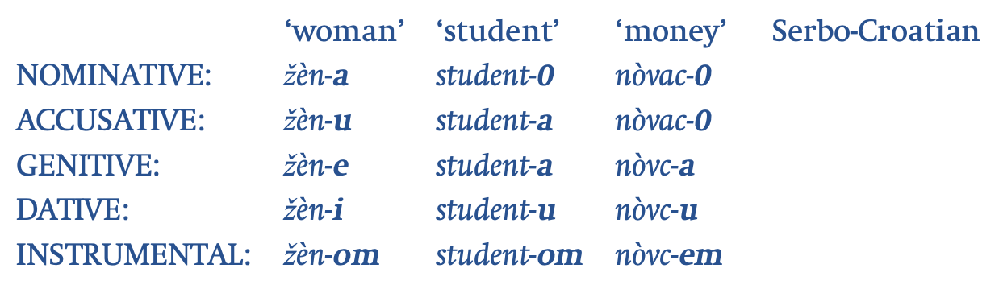

Morphology for Linguistics Olympiad Preparation
(How words encode grammar — and how to reason it out)

構詞學研究的是：
一個「詞」裡面，有哪些部分？而它們在表達語法或意義上有什麼功能？
在語言學奧賽中，構詞學不是背語言學術語，而是回答這個問題：
哪些形式反覆出現？它們在什麼條件下出現？
💡 在解題時，注意觀察 重複出現的形式 和它們對應的 語法功能。
Morphology studies how words are internally structured and how grammatical meaning is encoded inside words. In Olympiad problems, morphology is about one core task: Identifying which parts of a word do grammatical work, and under what conditions. Key idea:
A word 詞 is often not atomic, and don’t confuse it with a (Chinese) character 字.
It is a structured object composed of:
💡 以下這句話有幾個字？幾個詞？
「你好，我叫小花，很高興認識你。」
You only need some basic concepts to solve most Olympiad morphology problems.
A morpheme is the smallest recurring meaningful (abstract) unit (i.e., with a meaning or grammatical function), which usually appears in multiple words and has a stable meaning. E.g., undesirability is made up of four morphemes: un- (否定前綴) + desire (stem 詞根) + -able (形容詞後綴) + -ity (名詞後綴). Morph is the actual shape or the realization of a morpheme. (un-, desir-, -abil-, -ity)

Provided a language allows for multiple morphemes to form a word, next question is: What kind of morphemes can co-occur in words?.
| Type | What it contributes | Function | Example |
|---|---|---|---|
| Lexical | “what kind of thing/action” | what it is | dog, run |
| Grammatical | number, tense, role, size | how it behaves | plural, past, diminutive |
Affix 詞綴
Prefix 前綴。如英文 un-desirability
Suffix 後綴。如英文 undesirabil-ity
Infix 中綴。 如他加祿語 (Tagalog) 詞根：basa (讀)。中綴：-um- (動作完成或開始)。結果：b-um-asa (讀了)。
Circumfix 環綴: 如德文 ge- + mach (詞根) + -t → gemacht (做的)。
Transfix 轉綴: 它不是簡單的加在前後，而是像「編織」一樣將元音插入由輔音組成的詞根。如阿拉伯語 (Arabic)：三輔音詞根： K-T-B (與「寫」相關的抽象意義)。轉綴模式 A (a-a)： 代表「主動過去式」 → kataba (他寫了)。轉綴模式 B (i-a)： 代表「名詞/書本」 → kitab (書)。轉綴模式 C (a-i)： 代表「施事者/作者」 → katib (作家)。
Stem 詞幹 (There is a special term for monomorphemic stems, such as dog in English, called root 詞根)
各種組合。three logically possible word structures:

⚠️ You do not need to label it as prefix/suffix/root in the solution；you only need to identify its function.
In many languages:
This allows reasoning even when you do not know the language.
Olympiad rule of thumb: If a piece only appears when the meaning changes in a systematic way, it is grammatical.
⚠️ Form 和 meaning 之間的關係並不總是一對一的！

In Turkish, number and case are expressed by separate affixes and thus both are needed for the expression of the two meanings. In the Latin example, a single affix suffices since it carries both number and case. The Turkish affix pattern is termed separatist ; the Latin is cumulative .
Allomorphs are variants of a morpheme (i.e., the alternative pronunciation of the same morpheme in the same environment). E.g., -s and -es are allomorphs of the morpheme -s in English; im-* and in-* are allomorphs of the morpheme -in in English.
Allomorphic differences can depend on the phonological or lexical environment.
特別是，同一語法意義（如複數）可能用不同方式表達，例如：

A single grammatical meaning (e.g. plural) may be expressed by:
💡 No affix ≠ no morphology. Do not assume morphology must “look clean”.
You do not need full typological knowledge, but knowing what kinds of systems exist prevents false assumptions.
| 類型 | 特徵 | Olympiad Implication |
|---|---|---|
| 孤立語 Isolating | 幾乎沒詞形變化 | 不要亂找 affix |
| 黏著語 Agglutinative | 一個語素一個功能 | 勇敢拆，但要有證據 |
| 屈折語 Fusional | 一個形式多功能 | 不要一對一假設 |
| 非串接 Non-concatenative | 音變／內部改變 | 看「變了什麼」 |
幾乎「一詞一語素」 Words usually = single morpheme
詞本身幾乎不變形 Words usually consist of a single morpheme
語法功能多靠詞序、獨立功能詞來表達 Grammatical meaning is expressed by word order or separate particles
典型例子：現代漢語（Modern Mandarin Chinese）
| 形式 | 意義 |
|---|---|
| 我 | I |
| 我們 | we |
| 吃 | eat |
| 吃飯 | eat rice / eat a meal |
💡 Olympiad implication: - Do not look for affixes everywhere — sometimes there are none.
一個語素，一個功能（很乾淨） Words are formed by concatenating morphemes; each morpheme usually has one clear grammaticalfunction
典型例子：土耳其語（Turkish） ev = house
| 詞形 | 分析 | 意義 |
|---|---|---|
| ev | ev | house |
| ev-ler | ev + plural | houses |
| ev-ler-im | house + plural + my | my houses |
💡 Olympiad implication: - Excellent for segmentation-based reasoning.
A single morpheme may encode multiple grammatical meanings; morpheme boundaries are often unclear.
Example:
one ending = tense + person + number| 詞形 | 意義 |
|---|---|
| hablo | I speak |
| hablas | you speak |
| habla | he/she speaks |
詞尾同時包含主詞人稱、單數、現在式。
💡 Olympiad implication: - Do not expect one-to-one form–meaning mapping.
Grammatical meaning expressed by internal vowel changes, reduplication, tone or template shifts.
💡 Olympiad implication: - If “nothing seems added”, check what changed.
| 單數 | 複數 |
|---|---|
| kitab (book) | kutub (books) |
沒有加字尾；母音模式改變 → 複數
Task: Identify recurring pieces and their meanings.
Key strategy:
Identify recurring pieces and segment words based on evidence.
| Word | Meaning |
|---|---|
| laku | dog |
| laku-pa | dogs |
| sena | cat |
| sena-pa | cats |
Question : Which part marks plural?
| Word | Meaning |
|---|---|
| tora | horse |
| tora-ki | big horse |
| mika | goat |
| mika-ki | big goat |
Question: What does -ki
express?
Task: Apply the inferred rule to generate unseen forms.
Key strategy:
| Word | Meaning |
|---|---|
| panu | man |
| panu-ta | men |
| sili | woman |
Question: What is the plural of woman?
Task: Explain why the same grammatical meaning has different surface forms.
Key strategy:
| Word | Meaning |
|---|---|
| tek | stone |
| tak | stones |
| pel | bird |
| pal | birds |
Question: How is plural expressed in this language?
Beginners often segment too much.
Minimal principle:
Morphological knowledge tells you what kinds of rules are plausible.
Example:
A “plural” marker that only appears with humans → plausible
A plural marker that randomly disappears → suspicious
Advanced Olympiad problems include controlled exceptions.
Correct reaction:
When facing a morphology problem, always ask:
觀察與標記 (Observation & Labeling)：不要急著分析，先快速掃描題目提供的「目標語言」與「翻譯」。
對比與切分 (Segmentation by Contrast)：這是解題的核心技巧。尋找「最小差異」的對組（Minimal Pairs）。
b-um-asa）。ge-...-t）。建立矩陣/範式 (Building a Paradigm)：當數據量大時，視覺化整理能幫助你快速發現缺口。建議繪製表格：
| 詞語 \ 語法特徵 | 單數 (SG) | 複數 (PL) |
|---|---|---|
| 走路 | walk | walks |
| 跑 | run | runs |
透過填表，你可以清楚看出是哪個部分在變動，哪個部分保持不變。
辨識非連續構詞 (Identifying Non-concatenative Morphology)：有些語言的變化不是單純的加減法，這時要注意：
bata (小孩)
-> batabata (孩子們)。sing
-> sang -> sung。處理 Allomorphy：這是構詞題最難的一環。前面提到，有時候同一個意義會有不同的形式（變體）。
-en；以清音結尾時，後綴為 -et」。驗證與產出 (Verification & Synthesis)： 利用你歸納出的語法規則，試著推導出題目要求填寫的答案。
逆向檢驗： 用你的規則反推回題目已給出的範例。如果有一個對不上，代表你的規則需要修正。
嚴謹性檢查： 確保你的答案符合該語言已展現出的音節結構與拼寫習慣。
💡 常用語言學小筆記
在解題時，可以利用簡單的公式來描述單詞結構：Word = Root + Affixes 或者更複雜的層次結構：[[Root] + Deriv.Affix] + Infl.Affix
💡 專業提示：語奧題目通常是「自給自足」的。如果你發現需要用到語言學背景知識之外的常識（例如特定的文化背景），先停下來，通常答案就藏在數據的邏輯對比中。
我們將使用(講義中)這份瓜拉尼語（Guaraní）的動詞題目來實踐剛才提到的「語奧構詞解題流程」。
根據題目提供的 14 個句子 ，我們先標註已知的語法特徵：
人稱代名詞： 我 (I), 我們 (We), 你們 (You-PL), 他 (He) 。
時態/狀態： 正在/現在式 (is/are), 將要 (will be), 過去/曾是 (was/were) 。
極性： 肯定, 否定 (not) 。
透過對比，我們可以拆解出以下組成部分：
1. 詞根 (Roots):
pyhy: 捕捉 (catching)hyvykõ: 享受 (enjoying)momaitei: 問候 (greeting)karu: 吃 (eating)vo'o: 拿取 (taking)kororõ: 哭 (crying)ñe'e: 說話 (talking)jupi: 起床 (waking up)purahei: 唱歌 (singing)2. 人稱前綴 (Person Prefixes):
a-ja-pe-o-3. 時態後綴 (Tense Suffixes):
-ta-ma瓜拉尼語有一個關鍵的鼻音共振 (Nasality)
規則。觀察詞根是否包含鼻音（如 m, n, ñ 或有波浪號的元音
~）：
pyhy, mbokapu, karu, vo'o, jupi, purahei。hyvykõ, momaitei, ñe'e, kororõ 。否定結構公式：
nd-，鼻腔詞根用
n-。a-, ja-, pe-，需插入 -a-。-mo'ãi。i, y
或鼻化元音，用 -ri；其餘用 -i。檢查是否有「元音交替」（如 sing -> sang）或「重疊」等不屬於「加減法」的規則。檢查後確認為「串接構詞」，無須特別處理。
瓜拉尼語在這一題表現出非常典型的「黏著語」（Agglutinative）特徵，所有的語法意義（人稱、時態、否定）都是透過「前綴」或「後綴」像樂高積木一樣串接起來的 。 在觀察數據時，發現詞根（如 karu, pyhy）在組合過程中保持完整，沒有出現像 kel -> kal 那種內部元音改變的現象，所以這一題不需要套用第四步的規則，我們可直接跳過這個環節 。
第五步（處理語素變體）其實是這道瓜拉尼語題目中最難、最核心的部分。
發現變體： 觀察到否定標記有 n- / nd- 與
-i / -ri 。
找出環境： 發現這取決於詞根是否含有鼻音（鼻音共振）以及詞根末尾的元音性質。
建立規則： 建立「口腔用 nd-、鼻腔用
n-」的規則 。(寫回表格中)
根據上述規律，我們來回答題目：
D1. 翻譯成英文：
(a) akaruma: a- (我) +
karu (吃) + -ma (過去式) = I was
eating.
(b) ojupita: o- (他) +
jupi (起床) + -ta (將來式) = He will
be waking up.
(c) ndavo’omo’ãi: nd-a- (否定+1SG)
+ vo'o (拿) + -mo'ãi (將來否定) = I
will not be taking.
(d) napekororõ: n-a-pe- (否定+2PL)
+ kororõ (哭，鼻腔詞根) = You (PL) are not
crying. (註：此處否定後綴可能因鼻化元音省略或題目簡化)
(e) ndapyhyima: nd-a- (否定+1SG) +
pyhy (捕捉) + -i (否定) + -ma
(過去) = I was not catching.
D2. 翻譯成瓜拉尼語：
(f) you are not shooting: nd-
(口腔) + -a- + pe- (你們) +
mbokapu (射擊) + -i (否定) =
ndapembokapui
(h) we will be eating: ja- (我們) +
karu (吃) + -ta (將來) =
jakaruta
(i) I will not be singing: nd-
(口腔) + a- (我) + purahei (唱) +
-mo'ãi (將來否定) =
ndapuraheimo’ãi
💡 「鼻音共振」這個在語言學中常見的現象，可以更深入的語法規則
在語奧題型中，「鼻音共振（Nasal Harmony）」或「鼻化現象」是極常見的考點。在瓜拉尼語（Guaraní）這題中，這個現象直接決定了前綴與後綴的選擇。
我們根據題目 的數據，深入拆解這個規則：
在解題時，第一步要先判斷詞根是口腔詞根 (Oral Root) 還是 鼻腔詞根 (Nasal Root)。
鼻腔特徵判別：
只要詞根中包含鼻音字母（m, n,
ñ）或帶有波浪號的鼻化元音（如 õ,
ẽ），該詞根即屬鼻腔性質 。
分類練習：
pyhy
(捕捉)、karu (吃)、vo'o
(拿)、jupi (起床)、purahei (唱)。hyvykõ
(享受)、momaitei (問候)、ñe'e
(說話)、kororõ (哭)。當我們要表達「不…」時，前綴的形式會受詞根性質影響：
nd-。例如：nd-o-karu...
(他不吃)、nd-a-pe-vo'o... (你們沒拿)。n-。例如：n-o-hyvykõ...
(他不享受)、n-a-pe-kororõ... (你們沒哭)。a-, ja-,
pe-）之前時，中間會多出一個 -a-。除了前綴，後綴也會根據詞根的「末尾音節」產生變化：
-mo'ãi。i, y) 或
鼻化元音，後綴使用 -ri。e），後綴則用
-i。試著思考：為什麼「他不唱歌」的翻譯中，否定前綴要選 nd-
還是 n-？
purahei。purahei 中沒有鼻音字母（m, n, ñ）或鼻化標記
。nd-。
💡 構詞題小訣竅：
在語奧中，如果發現同樣意義的前綴有兩個變體（如 n- 與
nd-），90%
的機率是受到後面接續音節的音韻環境（例如是否為鼻音、是否為元音）影響。
Seeing Morphology: “Words Are Not Atomic”
| Word | Meaning |
|---|---|
bata |
child |
bata-ko |
children |
luma |
house |
luma-ko |
houses |
💡 Expected reasoning
-ko recurs only with plural meaningKey takeaway: Morphology starts with repetition + consistency, not terminology. Stop try to invent extra rules; Reinforce minimum necessary segmentation
| Word | Meaning |
|---|---|
| tap | stone |
| tap-im | stones |
| sun | tree |
| sun-um | trees |
| lak | road |
| lak-im | roads |
💡 Expected reasoning
-im and -um are both plural markers⚠️ Common wrong hypothesis (to discuss) : “There are two different plurals.” And why it fails:
| Word | Meaning |
|---|---|
| moro | dog |
| moro-ka | dogs |
| moro-ti | small dog |
| moro-ti-ka | small dogs |
| sena | cat |
| sena-ti | small cat |
💡 Expected reasoning
-ka = plural-ti = diminutive (size/derivation)| Word | Meaning |
|---|---|
| kel | goat |
| kal | goats |
| pem | bird |
| pam | birds |
| tir | fish |
💡 Expected reasoning
Key takeaway: Absence of an affix is itself evidence.
Constraints, Zero Marking, Semantics
| Word | Meaning |
|---|---|
anu |
man |
anu-ka |
men |
isi |
woman |
isi-ka |
women |
poko |
stone |
poko |
stones |
luma |
house |
luma |
houses |
💡 Expected reasoning
-ka marks plural only for humansanu-ti-ka (still human → plural
applies)Why this is IOL-level
| Lab | Focus | Cognitive Skill |
|---|---|---|
| 1 | Segmentation | Pattern detection |
| 2 | Allomorphy | Conditioned variation |
| 3 | Function separation | Hypothesis discipline |
| 4 | Non-concatenative | Rule abstraction |
| 5 | Constraints & exceptions | System-level reasoning |